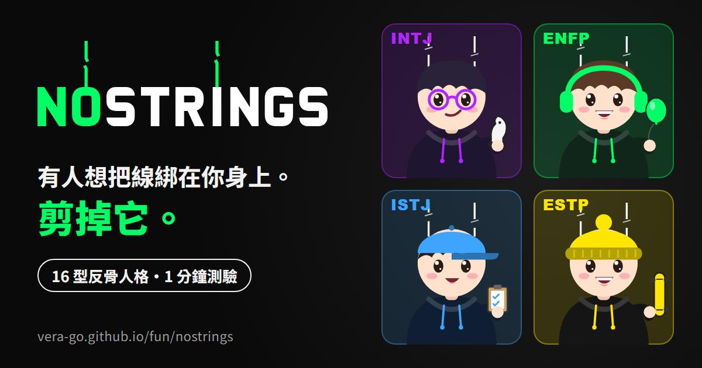
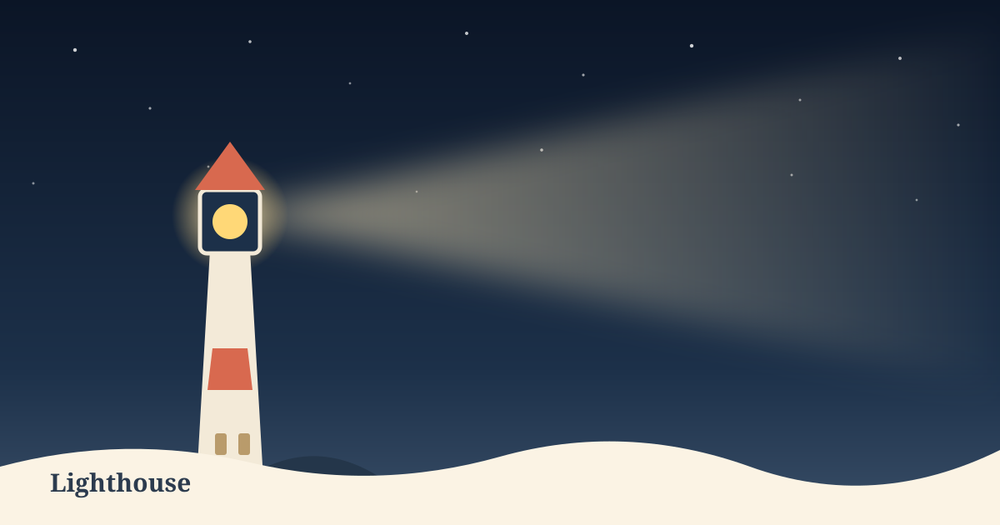

美食🍽️ 餐廳推薦投票建立聚餐活動，大家一起推薦餐廳、投票決定去哪吃。開始揪團 →
工具🐷 暈頭轉向小豬轉盤午餐吃什麼、誰去倒垃圾？小豬暈一暈幫你選。請小豬轉 →
學習📘 安安英文教室國中、高中段考和多益的單字、文法，跟著安安老師上課、闖關。進教室 →

測驗🧵 NOSTRINGS測測你是哪一種反骨人格？剪斷那條線 →
陪伴 Lighthouse不是你的錯。這裡很安靜，先靠岸歇一會兒吧。靠岸休息 →🙋 全網最聽勸：願望牆
載入中⋯⋯